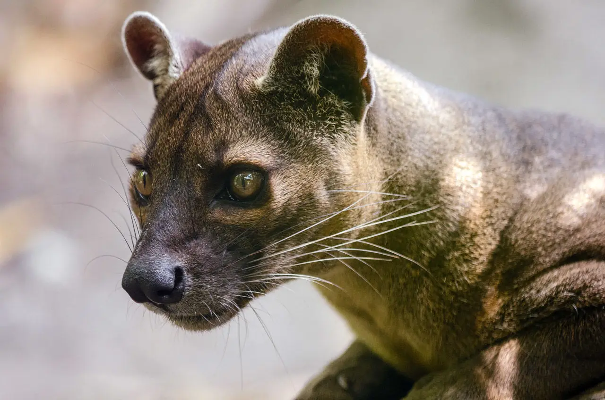

Fossa
Cryptoprocta ferox
Le prédateur suprême de Madagascar. À l’apparence féline mais apparenté aux mangoustes, le fossa chasse les lémuriens dans la canopée avec une agilité remarquable.
Madagascar abrite une faune parmi les plus extraordinaires au monde. Isolée pendant des millions d’années, cette île a vu naître des espèces que l’on ne trouve nulle part ailleurs sur Terre — une preuve vivante de la créativité infinie de la nature.
Cryptoprocta ferox
Le prédateur suprême de Madagascar. À l’apparence féline mais apparenté aux mangoustes, le fossa chasse les lémuriens dans la canopée avec une agilité remarquable.
Daubentonia madagascariensis
Le plus grand primate nocturne au monde utilise son doigt médian allongé pour tapoter l’écorce et extraire des larves — une niche écologique occupée ailleurs par les pics.
Astrochelys radiata
Reconnaissable à sa spectaculaire carapace en forme d’étoile, cette tortue en danger critique peut vivre plus de 100 ans dans les forêts épineuses du sud de Madagascar.
Pteropus rufus
Avec une envergure dépassant un mètre, cette grande chauve-souris frugivore est un pollinisateur et disperseur de graines essentiel, contribuant à la survie des forêts malgaches.
Uroplatus phantasticus
Maître du camouflage : sa queue en forme de feuille et sa peau marbrée le rendent presque invisible sur l’écorce des arbres, lui valant l’un des noms les plus spectaculaires de la nature.

Lemur catta
Symbole emblématique de Madagascar, immédiatement reconnaissable à sa queue annelée noire et blanche. Social et vocal, il se chauffe au soleil chaque matin dans une posture dite de « culte du soleil ».
Indri indri
Le plus grand lémurien vivant, dont le chant mélancolique, semblable à celui d’une baleine, résonne dans la forêt tropicale. Strictement protégé, il ne peut survivre en captivité.